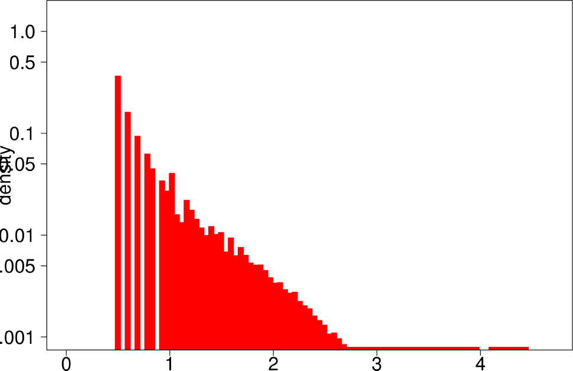
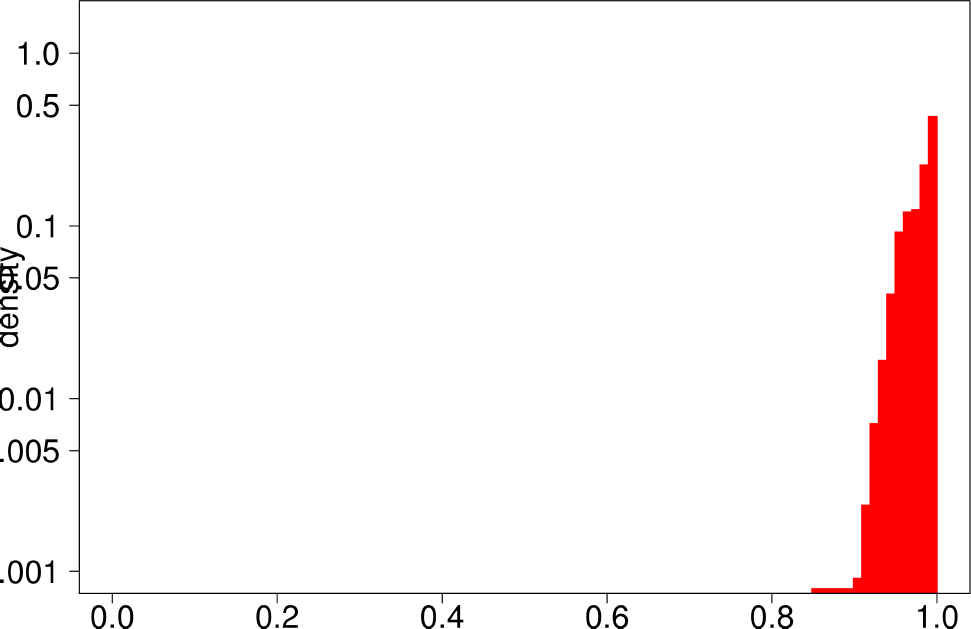
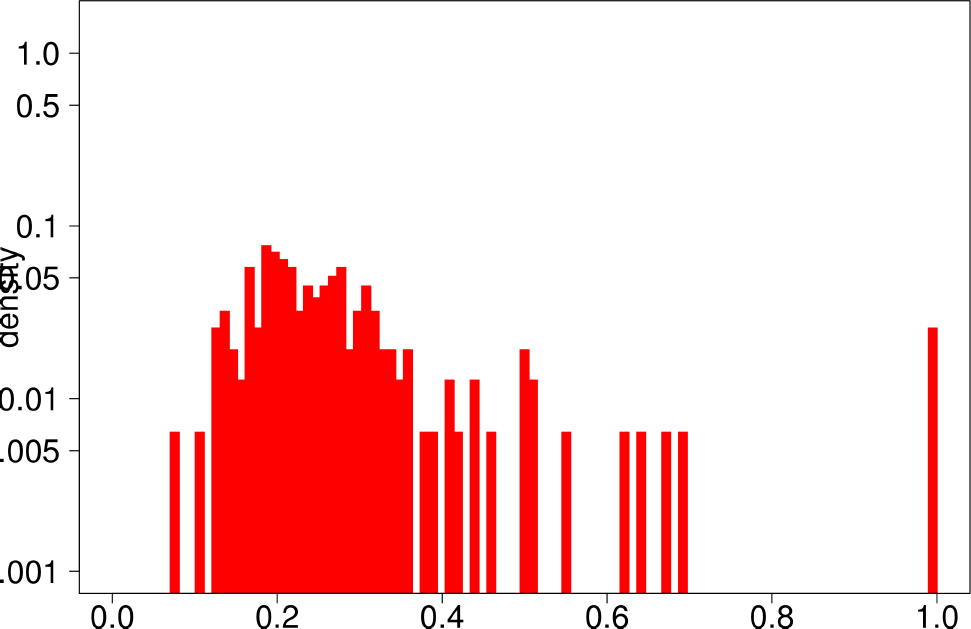
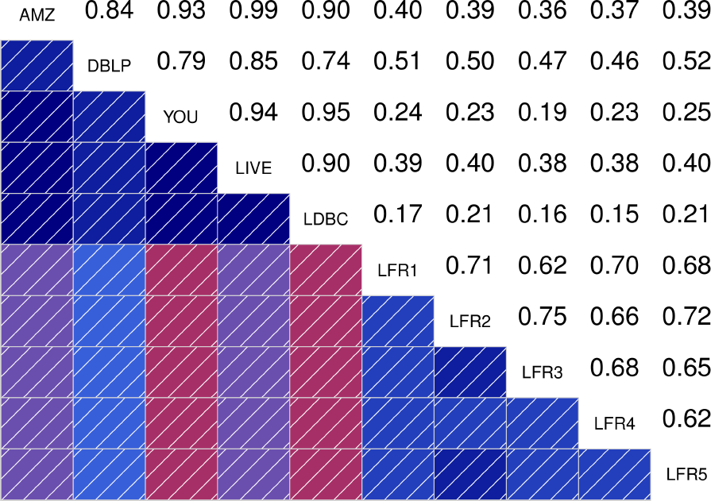

This blog entry is about one of the features of DATAGEN that makes it different from other synthetic graph generators that can be found in the literature: the community structure of the graph.
When generating synthetic graphs, one must not only pay attention to quantitative measures such as the number of nodes and edges, but also to other more qualitative characteristics such as the degree distribution, clustering coefficient. Real graphs, and specially social networks, have typically highly skewed degree distributions with a long tail, a moderatelly large clustering coefficient and an appreciable community structure.
The first two characteristics are deliberately modeled in DATAGEN. DATAGEN generates persons with a degree distribution that matches that observed in Facebook, and thanks to the attribute correlated edge generation process, we obtain graphs with a moderately large clustering coefficient. But what about the community structure of graphs generated with DATAGEN? The answer can be found in the paper titled “How community-like is the structure of synthetically generated graphs”, which was published in GRADES 2014 [1]. Here we summarize the paper and its contributions and findings.
Existing synthetic graph generators such as Rmat [1] and Mag [2], are graphs generators designed to produce graphs with long tailed distributions and large clustering coefficient, but completely ignore the fact that real graphs are structured into communities. For this reason, Lancichinetti et al. proposed LFR [3], a graph generator that did not only produced graphs with realistic high level characteristics, but enforced an appreciable community structure. This generator, has become the de facto standard for benchmarking community detection algorithms, as it does not only outputs a graph but also the communities present in that graph, hence it can be used to test the quality of a community detection algorithm.
However, no one studied if the community structure produced by LFR, was in fact realistic compared to real graphs. Even though the community structure in LFR exhibit interesting properties, such as the expected larger internal density than external, or a longtailed distribution of community sizes, they lack the noise and inhomogeneities present in a real graph. And more importantly, how does the community structure of DATAGEN compares to that exhibited in LFR and reap graphs? Is it more or less realistic? The authors of [1] set up an experiment where they analized the characteristics of the communities output by LFR, and the groups (groups of people interested in a given topic) output by DATAGEN, and compared them to a set of real graphs with metadata. These real graphs, which can be downloaded from the Snap project website, are graphs that have recently become very popular in the field of community detection, as they contain ground truth communities extracted from their metadata. The ground truth graphs used in this experiment are shown in the following table. For more details about how this ground truth is generated, please refer to [4].
| Nodes | Edges | |
|---|---|---|
| Amazon | 334863 | 925872 |
| Dblp | 317080 | 1049866 |
| Youtube | 1134890 | 2987624 |
| Livejournal | 3997962 | 34681189 |
The authors of [1] selected a set of statistical indicators to
characterize the communities:
- The clustering coefficient
- The triangle participation ration (TPR), which is the ratio of nodes that close at least one triangle in the community.
- The bridge ratio, which is the ratio of edges whose removal disconnects the community.
- The diameter
- The conductance
- The size
The authors start by analyzing each community of the ground truth graphs using the above statistical indicators and ploting the distributions of each of them. The following are the plots of the Livejournal graph. We summarize the findings of the authors regarding real graphs: + Several indicators (Clustering Coefficient, TPR and Bridge ratio) exihibit a multimodal distribution, with two peaks aht their extremes.
- Many of the communities (44%) have a small clustering coefficient between 0 and 0.01. Out of them, 56% have just three vertices. On the other hand, 11% of the communities have a clustering coefficient between 0.99 and 1.0. In between, communities exhibit different values of clustering coefficients. This trend is also observed for TPR and Bridgeratio. This suggests that communities cannot be modeled using a single model. * 84% of the communities have a diameter smaller than five, suggesting that ground truth communities are small and compact * Ground truth communities are not very isolated, they have a lot of connections pointing outside of the community.
- Most of the communities are small (10 or less nodes).
- In general, ground truth communities are, small with a low diameter, not isolated and with different ranges of internal connectivity.
| Clustering Coefficient | TPR |
| Bridge Ratio | Diameter |
|  | |
| Conductance | Size |
The authors performed the same experiment but for DATAGEN and LFR graphs. They generated a graph of 150k nodes, using their default parameters. In the case of LFR, they tested five different values of the mixing factor, which specifies the ratio of edges of the community pointing outside of the community, They ranged this value from 0 to 0.5. The following are the distributions for DATAGEN.
| Clustering Coefficient | TPR |
|  | |
| Bridge Ratio | TPRDiameter |
| Conductance | Size |
The main conclusions that can be extracted from DATAGEN can be summarized asfollows:
- DATAGEN is able to reproduce the multimodal distribution observed for clustering coefficient, TPR and bridge ratio.
- The central part of the clustering coefficient is biased towards the left, in a similar way as observed for the youtube and livejournal graphs.
- Communities of DATAGEN graphs are not, as in real graphs, isolated, but in this case their level of isolation if significantly larger.
- The diameter is small like in the real graphs.
- It is significant that communities in DATAGEN graphs are closer to those observed in Youtube and Livejournal, as these are social networks like the graphs produced by DATAGEN. We see that DATAGEN is able to reproduce many of their characteristics.
Finally, the authors repeat the same experiment for LFR graphs. The following are the plots for the LFR graph with mixing ratio 0.3. From them, the authors extract the following conclusions:
- LFR graphs donot show the multimodal distribution observed in real graphs
- Only the diameter shows a similar shape as in the ground truth.
| Clustering Coefficient | TPR |
|  | |
| Bridge Ratio | TPRDiameter |
| Conductance | Size |
To better quanify how similar are the distribuions between the different graphs, the authors also show the correlograms for each of the statisticsl indicators. These correlograms, contain the Spearman’s correlation coefficient between each pair of graphs for a given statistical indicator. The more blue the color, the better the correlation is. We see that DATAGEN distributions correlate very well with those observed in real graphs, specially as we commented above, with Youtube and Livejournal. On the other hand, LFR only succeds significantly in the case of the Diameter.
| Clustering Coefficient | TPR |
| Bridge Ratio | TPRDiameter |
|  | |
| Conductance | Size |
We see that DATAGEN is able to reproduce a realistics community structure, compared to existing graph generators. This feature, could be potentially exploited to define new benchmakrs to measure the quality of novel community detection algorithms. Stay tuned for future blog posts about his topic!
References
[1] Arnau Prat-Pérez, David Domínguez-Sal: How community-like is the structure of synthetically generated graphs? GRADES 2014
[2] Deepayan Chakrabarti, Yiping Zhan, and ChristosFaloutsos. R-mat: A recursive model for graph mining. SIAM 2014
[3] Myunghwan Kim and Jure Leskovec. Multiplicative attribute graph model of real-world networks. Internet Mathematics
[4] Andrea Lancichinetti, Santo Fortunato, and Filippo Radicchi. Benchmark graphs for testing community detection algorithms. Physical Review E 2008.